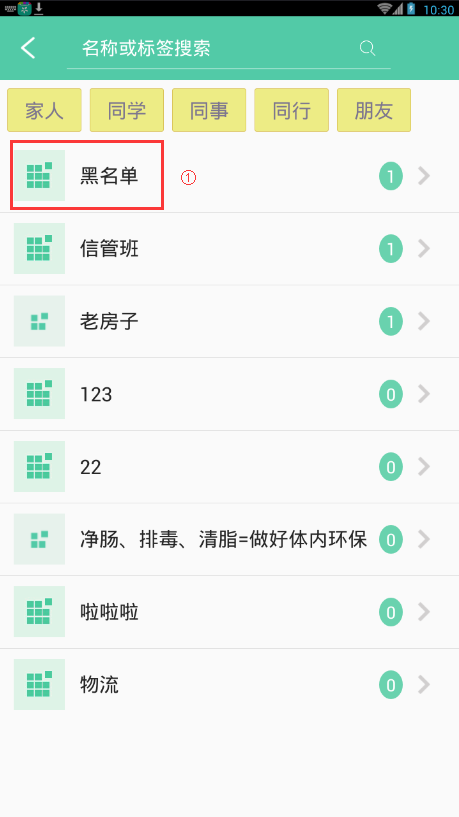
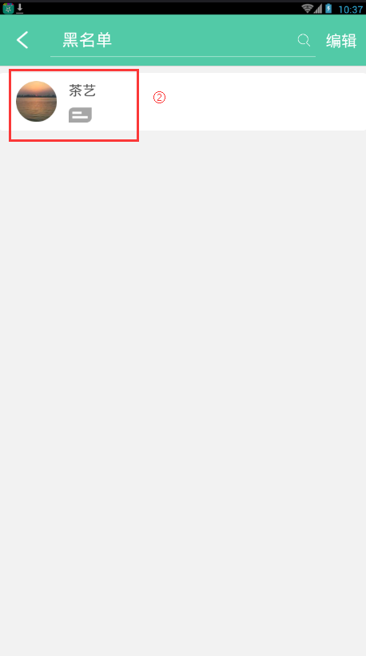
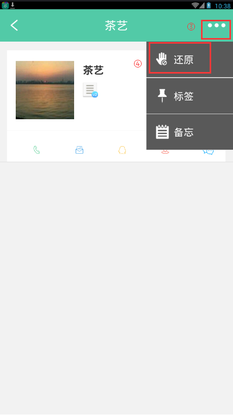
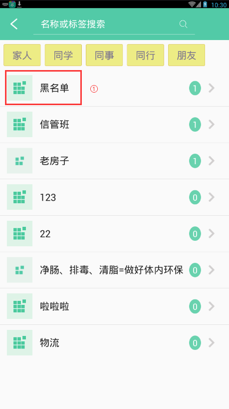
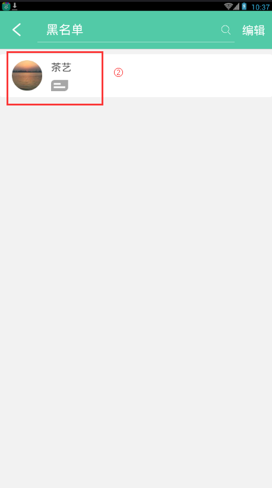
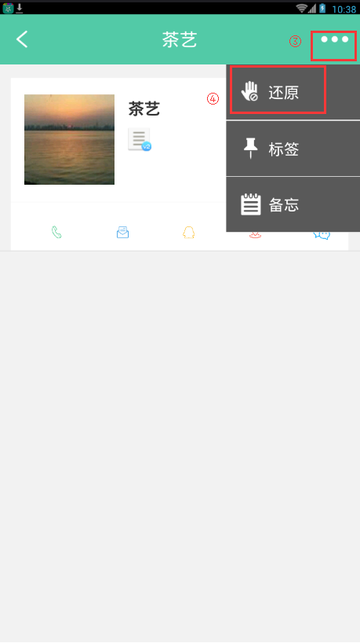

9. 如何还原黑名单中的联系人？
1. 人脉列表中点击搜索框，弹出空间分类列表。
2. 点击"黑名单"，进入到黑名单列表页面。
3. 点击黑名单联系人，进入到联系人详情页面。点击右上角的"..."->"还原"，将联系人还原到人脉主页面中，操作成功。
1. 人脉列表中点击搜索框，弹出空间分类列表。
2. 点击"黑名单"，进入到黑名单列表页面。
3. 点击黑名单联系人，进入到联系人详情页面。点击右上角的"..."->"还原"，将联系人还原到人脉主页面中，操作成功。
